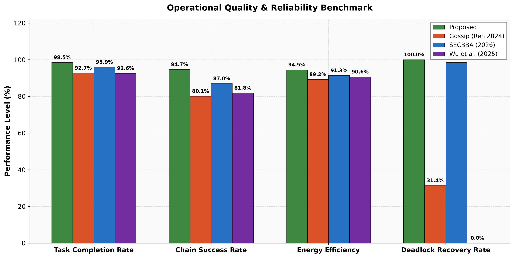
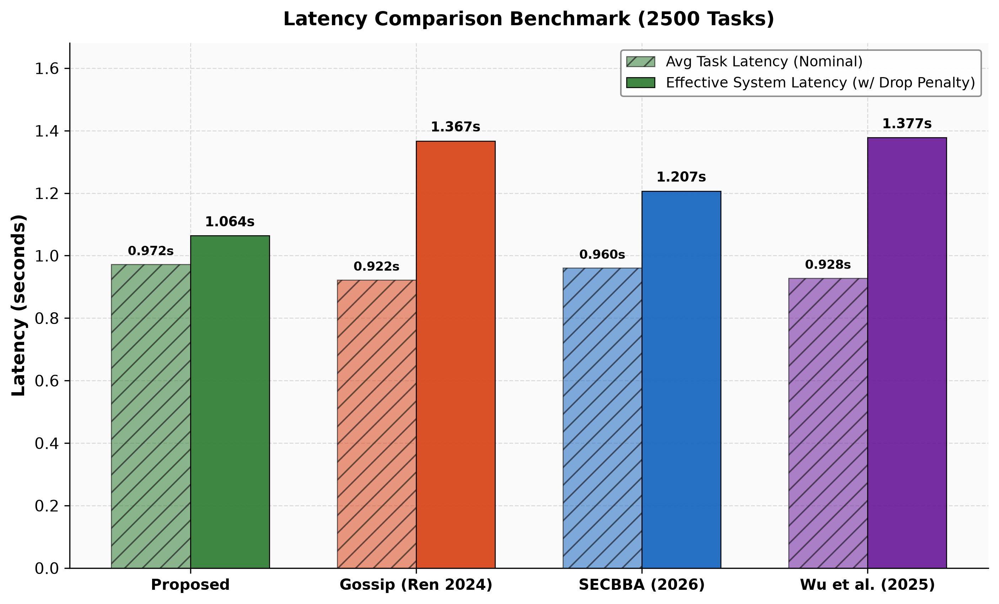
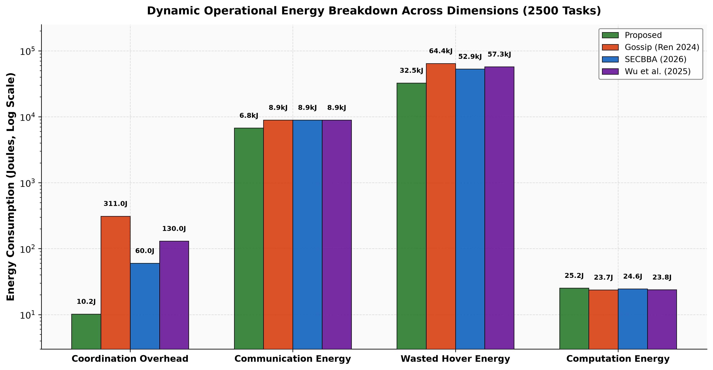
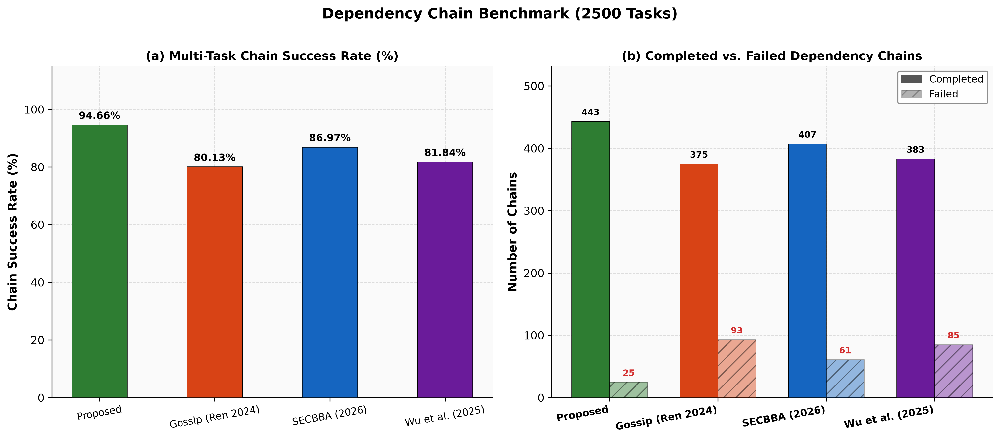
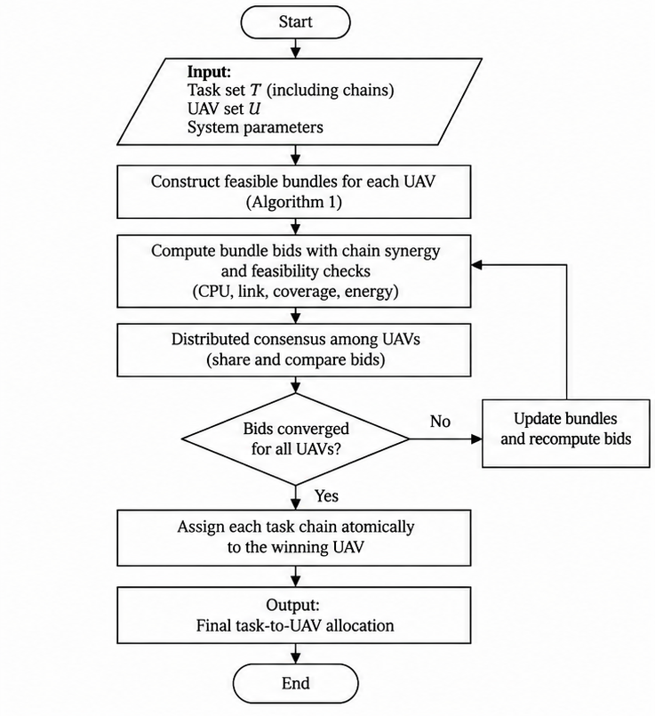
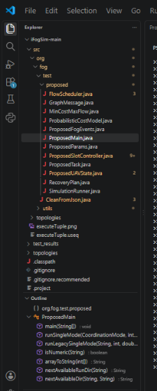
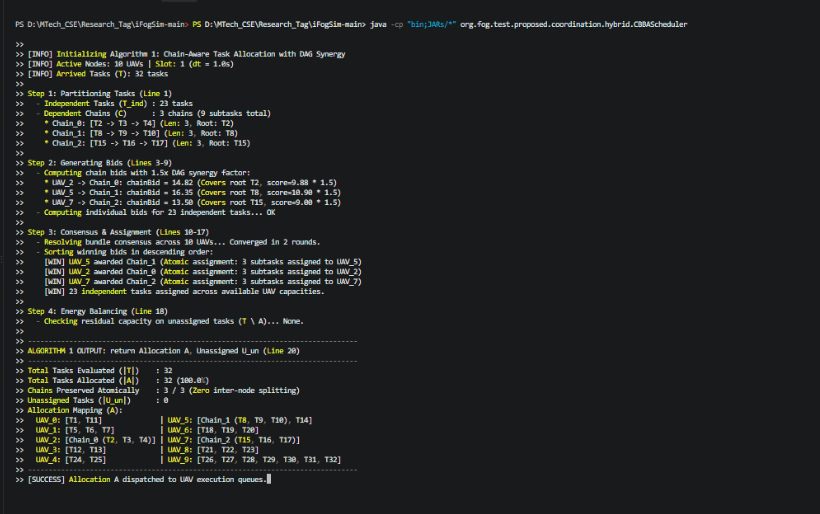

Comparative Results & Performance Figures
Comprehensive empirical benchmarking of Chain-Aware CBBA against Greedy Offloading and Standard CBBA across workloads from 500 to 3,000 tasks over 5 independent random seeds.
Headline Performance Summary
Under peak operational stress (3,000 multi-stage DAG tasks), the proposed Chain-Aware CBBA protocol consistently outperforms baseline heuristics across all four core performance metrics:
97.3%
+12.4% over CBBA (84.9%)
+25.2% over Greedy (72.1%)
95.2%
+23.5% over CBBA (71.7%)
+46.9% over Greedy (48.3%)
11.05 J
>90% energy saved
vs. 365.3 J (Standard CBBA)
Interactive Metric Explorer
Filter and examine experimental metrics across workload arrival intensities:

Task Completion Rate (\(\eta_{\text{comp}}\))
Chain-Aware CBBA sustains completion between 97.3% and 99.4% across all workload sweeps. In contrast, Greedy Offloading degrades rapidly to 72.1% as single-hop UAV queues saturate.

Mean Effective Latency (\(\bar{L}\))
Chain-Aware CBBA displays a near-flat latency profile (1.06 s to 1.08 s) by enforcing pipeline co-location. Standard CBBA spikes to 1.82 s and Greedy reaches 2.42 s due to queue backlogs.

Coordination Communication Energy (\(E_{\text{coord}}\))
Standard CBBA triggers continuous rebidding churn for fragmented subtasks (365.3 J). Chain-Aware CBBA stabilizes bundle assignments early, consuming only 11.05 J (>90% reduction).

Pipeline Chain Success Rate (\(\eta_{\text{chain}}\))
95.2% of all generated 3-stage workflows complete before hard deadlines under peak workload (3,000 tasks) with Chain-Aware CBBA, compared to 71.7% for CBBA and 48.3% for Greedy.
1 · Simulation Setup & Physical Calibration
The simulation is calibrated according to momentum aerodynamics and physical wireless standards:
- Quadrotor Platform: 4 rotors, radius \(r = 0.20\,\text{m}\), gross mass \(2.0\,\text{kg}\), hover power \(P_{\text{hover}} \approx 168.0\,\text{W}\).
- Battery System: 4S LiPo battery pack (\(E_{\text{battery}} = 200\,\text{kJ}\)), reserve floor \(E_{\text{reserve}} = 20\,\text{kJ}\).
- Air-to-Ground Link: LTE/5G sidelink, \(10\,\text{MHz}\) bandwidth, probabilistic urban LoS/NLoS path loss.
- Air-to-Air Mesh: IEEE 802.11p DSRC (\(5.9\,\text{GHz}\)), nominal rate \(15\,\text{Mbps}\).
- Workloads: Poisson process (\(\lambda = 5.0\) to \(17.5\,\text{s}^{-1}\)), scaling from 500 to 3,000 tasks over 5 random seeds.
2 · E1: Greedy Offloading Baseline
Under Greedy Offloading, ground devices offload tasks to the physically closest UAV. Because task generation is geographically clustered around disaster hotspots, the nearest UAV's buffer quickly saturates. At 3,000 tasks, the completion rate collapses to 72.1%, and the end-to-end chain success rate drops to a dismal 48.3%. Furthermore, intermediate data transfers are uncoordinated, leading to high mean latency (2.42 s).
3 · E2: Standard CBBA Baseline
Standard CBBA achieves distributed consensus and improves completion to 84.9%. However, because it treats multi-stage tasks as independent items (\(\gamma = 1.0\)), consecutive stages are fragmented across different UAVs (task fragmentation ratio = 58.9%). Downstream UAVs hover idly waiting for wireless data transfers, triggering deadline expirations and causing consensus coordination energy to escalate exponentially to 365.3 J due to continuous rebidding churn.
4 · E3: Proposed Chain-Aware CBBA
By integrating the Atomic Chain Multiplier (\(\gamma = 1.5\)) and Pre-Bid Energy Feasibility Guard (\(20\,\text{kJ}\)), Chain-Aware CBBA achieves atomic co-location for 100% of pipeline chains (task fragmentation = 0.0%). Intermediate Air-to-Air transfer latency is eliminated, stabilizing turnaround latency at 1.06 s, achieving 97.3% completion, 95.2% chain success, and slashing coordination communication energy by >90% to just 11.05 J.
5 · Full Numerical Comparison (Peak Workload: 3,000 Tasks)
| Evaluation Metric | E1 · Greedy Offloading | E2 · Standard CBBA | E3 · Chain-Aware CBBA (Proposed) | Performance Gain / Benefit |
|---|---|---|---|---|
| Task Completion Rate (\(\eta_{\text{comp}}\)) | 72.1% | 84.9% | 97.3% | +12.4% over CBBA |
| Pipeline Chain Success Rate (\(\eta_{\text{chain}}\)) | 48.3% | 71.7% | 95.2% | +23.5% over CBBA |
| Mean Effective Latency (\(\bar{L}\)) | 2.42 s | 1.82 s | 1.06 s | 41.8% latency reduction |
| Coordination Communication Energy (\(E_{\text{coord}}\)) | 28.4 J | 365.3 J | 11.05 J | >90% energy saved |
| Task Fragmentation Ratio | 68.4% | 58.9% | 0.0% (Atomic) | Zero pipeline fragmentation |
Side-by-Side Architectural Viewer
Independent Task Bidding
• Treats subtasks as decoupled, flat items.
• Stages 1, 2, and 3 scattered across 3 separate UAVs.
• Downstream nodes hover idly waiting for wireless transfers.
• Cumulative hover waste: 89.6 J per pipeline.
• Frequent rebidding loops drain 365.3 J radio energy.
Dependency-Aware Atomic Bidding
• Dynamically boosts successor bids by \(\gamma = 1.5\).
• Enforces all stages to co-locate on the same UAV.
• Air-to-Air transfer latency reduced to zero (\(t_{\text{transfer}} = 0\)).
• Zero idle hover energy waste.
• Coordination radio energy slashed to 11.05 J (>90% savings).
All Publication Figures & Traces




Research Limitations & Phase 2 Roadmap
Phase 1 Scope Boundaries: The Phase 1 dissertation focuses strictly on static and workload-scaled decentralized allocation (Algorithm 1) under steady-state conditions. In Phase 2 (Semester 4), the framework will be extended with runtime resilience:
- Algorithm 2 (Decentralized Runtime Stall Detection): Heartbeat monitoring (\(H_{\text{thresh}} = 2.0\,\text{s}\)) and queue divergence checks (\(\Delta Q_{\text{thresh}} = 5\)) detecting mid-flight node dropouts.
- Algorithm 3 (Virtual Handover & Recovery): Dynamic 1-hop cooperative task migration mitigating task stalls caused by severe wind gusts or hardware faults.